The fighting-game engine, rebuilt. It runs the MUGEN and Ikemen GO content you already have — then does what they never could.
Oxyde reads the formats a thousand authors already write — then adds the things the old engines never had.
SFF, AIR, CNS, CMD, ZSS, glTF and WebM — loaded straight from the characters and stages you own, even from inside .zip and .rar archives. No unpacking, no re-authoring.
A readable, modern script with real boolean logic and the first native command syntax in the family. Transpiles CNS and ZSS to FUSE, verified by re-fighting each conversion.
A match is a seed and two inputs a frame — nothing else. That one fact buys rollback netplay, frame-perfect replays, spectating and tournaments.
Lit glTF stages with true depth and occlusion, plus a belt-scroll brawler mode that runs the street horizontally — or vertically.
An LSP that completes and lints your scripts, and oxtool to convert, audit, diff, repair and replay any character from the command line.
One Rust codebase for Windows and Linux. It loads the system libraries it needs at run time, so a single Linux build keeps running across distro upgrades instead of breaking.
Compatibility is the floor. Everything below exists in Oxyde and in no other engine in the MUGEN family — not in WinMUGEN, not in Ikemen GO.
The Flexible User State Expression language — the family's first native script with real boolean logic, and the first native command syntax, instead of a separate INI.
Write FUSE natively, or bring CNS and ZSS — the transpiler lifts either into readable FUSE, proven byte-for-behavior by re-fighting it.
Chip, tech, burst, push-block, parry — with an absorb layer — and guard-break, added for every character by the engine, whether its author wrote them or not.
A tag button that works for any character — TagIn / TagOut wired into the engine, no author support required.
A base mode plus a stack of sparse deltas — the competitive knobs the engine already reads, declared as data and proven against the empty stack.
An x86 PC and an ARM handheld replay the same match, bit for bit — proven on real hardware, not just the same OS.
Upscale a character's own art 2× or 4× and repack it as a sidecar — same geometry and hit boxes, sharper pixels, zero determinism cost.
Nearest, sharp, smooth, scanlines, CRT and LCD — a finishing look the simulation and checksum never see.
A full belt-scroll beat-'em-up mode — waves, pickups, bosses and campaigns — running on the same deterministic engine.
Knock a cornered opponent clean out of the arena and the fight continues — seamlessly, in the next stage, without a reload.
Pack any fighter into one content-verified file — digest-checked on load, tamper-evident, ready to share.
UI and common states are embedded in the binary; the engine runs with zero author content, and every default is overridable.
The engine on one machine, the picture on another. Join a live match holding none of it: an 18 MB binary in an empty folder plays the host's whole archive — chars, stages and all — your side sending only input.
Pick a fighter your opponent doesn't have and the match still happens: their build pulls it over the connection, verifies it by content hash and plays. Opt-in on both sides, sandboxed data not code, and because the engine is deterministic, once both hold the same bytes the fight is identical.
No runtime to install and nothing to fetch. It resolves its system libraries at run time, so a single build survives a distro upgrade instead of failing to launch.
One binary that reads the same data the engine runs: convert, audit, diff, repair, replay and render any character, all scriptable, all deterministic.
Completion, hovers and live lint for FUSE in your editor — an LSP that understands the engine's own language.
oxtool ask — retrieval over the engine's own documentation and a casebook of real faults, grounded in shipped text.
The engine confirms every character is what its files say it is — a .cns renamed .fuse, a .def pointing at a file that isn't there, two languages in one file — named at load, before it ships wrong. Detection only; nothing is touched.
oxtool docs re-derives every number and claim in the reference from the code itself, so the manual can't drift from the engine.
FUSE authoring, assisted: the LSP, the always-exact transpiler and compiler, retrieval over the docs and fault casebook, an optional local model for the open-ended questions, and an MCP server that hands every one of those read-only tools to your own AI assistant.
u16 a frame.Oxyde's simulation is a pure function: the same seed and the same inputs produce the same fight, on every machine, every time. Nothing else in the family is built this way — and it's where Oxyde's rarest features come from, for free.
Only inputs cross the wire — kilobytes a match. Predict, re-simulate, reconcile; no desyncs to chase.
A whole match stored as its inputs. Tiny files that reproduce the fight exactly, forever.
A watcher is just a peer running the same sim from the players' inputs — kilobits a second, zero drift.
Re-run a submitted tape and check the end-state. A score that can't be faked.
Restore any past frame from a snapshot and re-simulate — frame-step, save-state, and replay your inputs against a recording dummy.
Re-run any match, or rewind the frames right before it went wrong — a debugger for your fights.
Every number below was counted against Ikemen GO's source, not either project's marketing. Where Oxyde leads, it leads by an amount you can check.
| Capability | Ikemen GO | Oxyde |
|---|---|---|
| State controllers | 158 | 160 |
| Triggers | 267 | 281 |
| Variable slots per bank | unbounded * | 65,536 |
| Command syntax in the language | INI only | native |
| Reference generated from the engine | — | yes |
* A memory-bounded bank is the feature: 65,536 live slots means a typo can't quietly allocate two billion.
FUSE — the Flexible User State Expression language — is Oxyde's native language. Point the transpiler at any MUGEN or Ikemen character and it comes back as readable FUSE, byte-for-behavior identical — proven by re-fighting it, not by hoping. The reference fighter, Arroyo, is written in it.
// The first real command syntax in the MUGEN family.
commands (time: 15, buffer: 1) {
rio = D, DF, F, D, DF, F, c
cyclone = D, DB, B, a
}
state -1 {
if command == "rio" && power >= 3000
&& (ctrl || stateno in [200, 230] && movecontact) {
changestate 3000
}
}One binary that reads the same data the engine runs. Convert a roster, prove a character works, repair a broken one, record a match to video — all scriptable, all deterministic.
The classic ladder, plus teams, turns, simul and tag — every MUGEN match type.
A belt-scroll brawler — waves, pickups, bosses and campaigns, with Story, Arcade, Survival, Boss Rush and Last Stand run types.
Watch a lobby live, or re-watch any match from its tiny replay tape.
Frame-step, save-states, input history and a recording dummy — a real debugger for your execution.
Branching story arcs in a declarative format, plus storyboards and per-character endings — authored as data.
Launch a cornered opponent out of the arena and the fight continues — seamlessly, in the next stage, mid-match.
Fight 1v1 across the wire with rollback netcode, or team up in local co-op.
Oxyde-original between-round challenges — breakable props and targets, authored as content.
The HD / UHD sprite tier builds an upscaled sprite set from a character's own frames and the engine draws from it while keeping the original geometry — so hit boxes, axes and timing stay exactly as the author drew them. The same frame, at each tier:
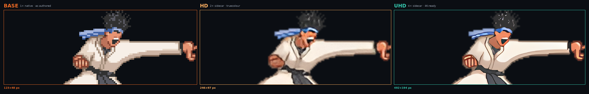
Switch tiers live, per match:
The original sprites, drawn exactly as shipped. Always the fallback — per sprite, so a partial pack is fine.
A sidecar at double resolution. Truecolour detail where the base art had flat palette fills, same on-screen footprint.
A quadruple-resolution sidecar for 4K panels — the sharpest the art can carry, with geometry untouched.
A pack is built in three steps — two are oxtool, the middle one your upscaler of choice:
oxtool sprites export writes every sprite to PNG with the character's real palette applied.
Upscale the PNGs 2× or 4× — RGB and alpha handled separately so silhouettes never halo.
oxtool sprites pack verifies every frame is exactly N× and writes an SFF v2 beside the base.
On top, a stack of output filters finishes the look — entirely presentational:
Entirely presentational — the simulation, the checksum and netplay never see it. HD stays safe for rollback, replays and tournaments.
Every frame below was produced headlessly by the engine itself — the same deterministic path that records replays and exports video. This is the reference fighter, Arroyo, on the Oxyde Battle Ring.
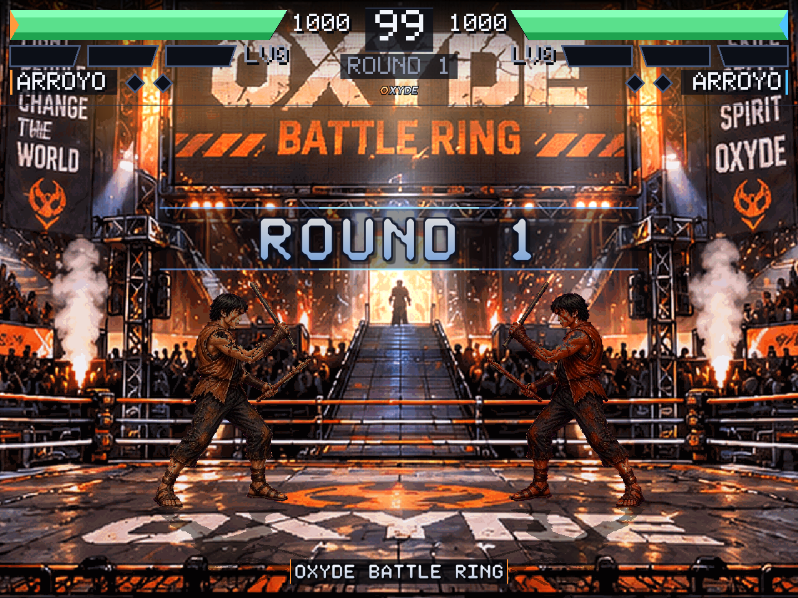
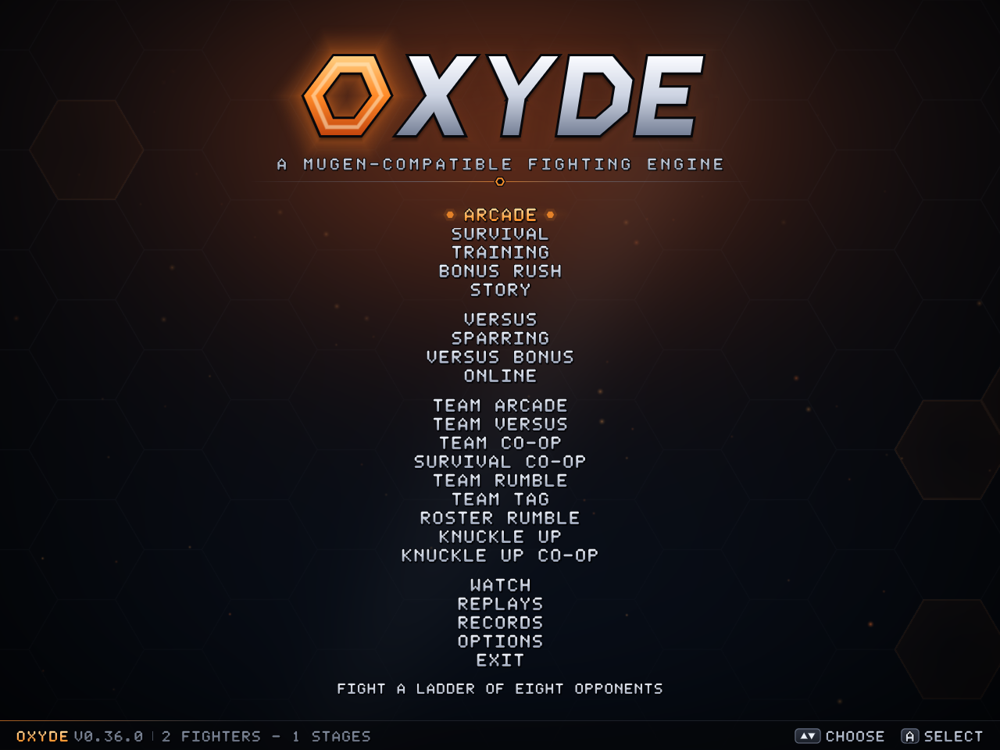
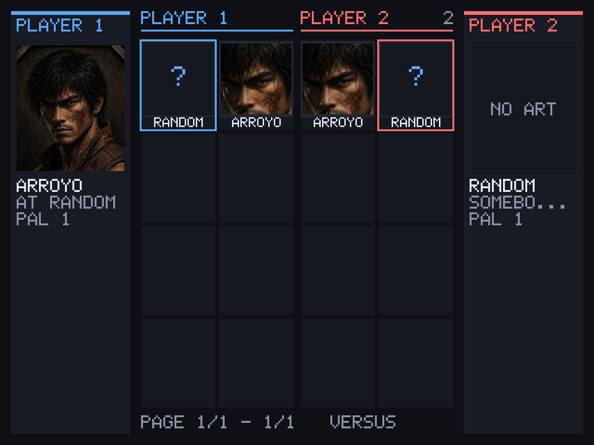
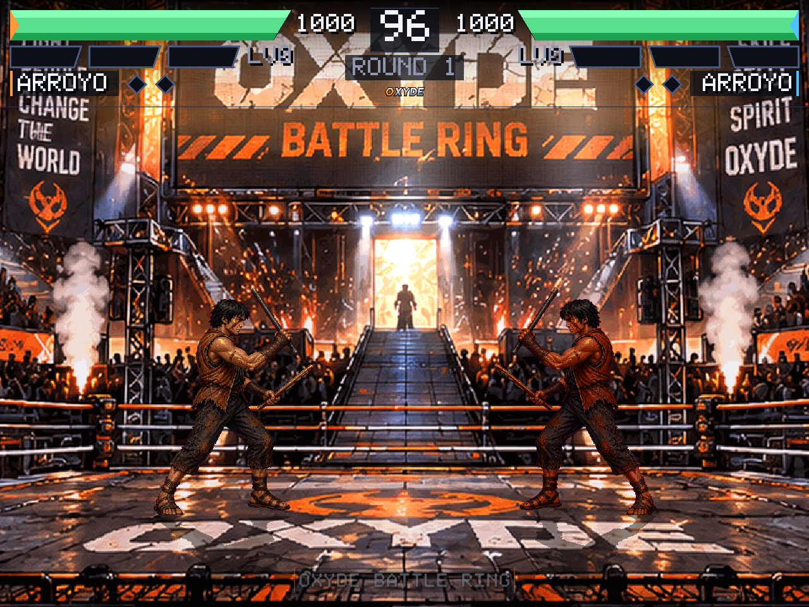
The things people ask first — answered plainly. The full FAQ and a format-by-format compatibility table live in the docs.
.def, .cns, .cmd, .air, .sff, .snd and .act files load exactly as they are. Point Oxyde at your MUGEN install and it reads your select.def and plays the whole roster — and the same folder still works in MUGEN afterward.oxtool — a scriptable headless engine with no equivalent in the MUGEN/Ikemen world.oxtool audit scores how much of a character works and points at the faults, oxtool validate flags files that aren't what they claim, and oxtool repair fixes common breakage — every repair backs up once and oxtool revert undoes it. A character that only half-ran in MUGEN often runs further here.Freeware, in the tradition of the engines that came before. Each build boots and plays the moment it unzips — the engine, a default screenpack, the reference fighter and stage.
Every build ships playable with zero author content: the engine, a default screenpack, the reference fighter Arroyo, and the Oxyde Battle Ring. Drop your characters into chars/ and go.
Want the full showcase? Add the Content Pack on top of either engine — one download, any OS — for all 19 Oxyde stages, the 15 bonus trials (they switch on between matches), and the Knuckle Up props and demo run.
Every frame rendered in-engine — nineteen arenas, fifteen bonus trials, and the four-player Knuckle Up co-op mode.
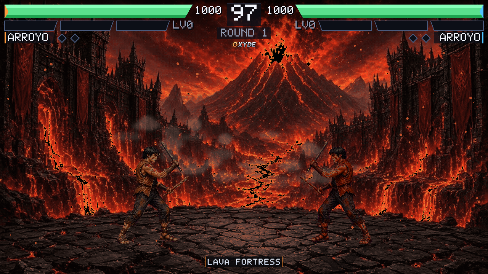
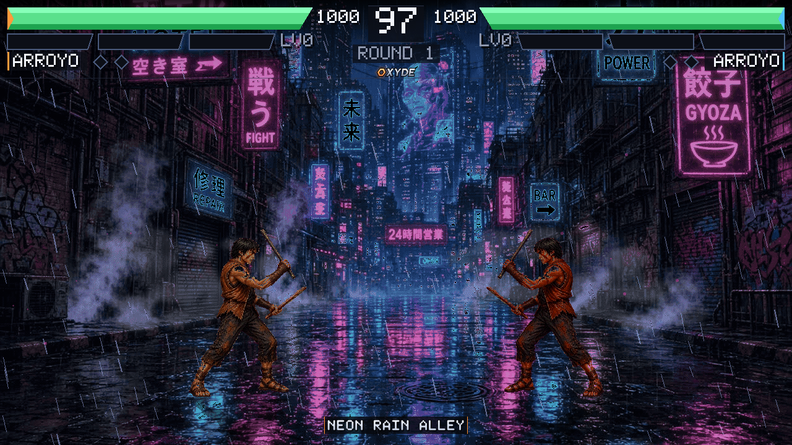
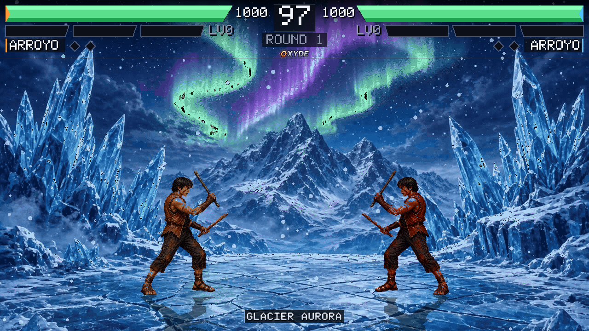
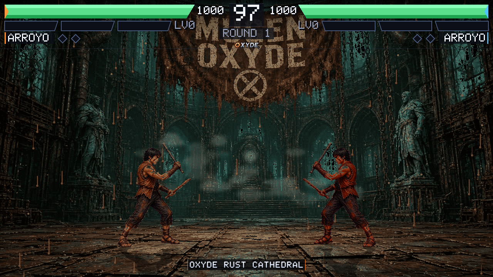
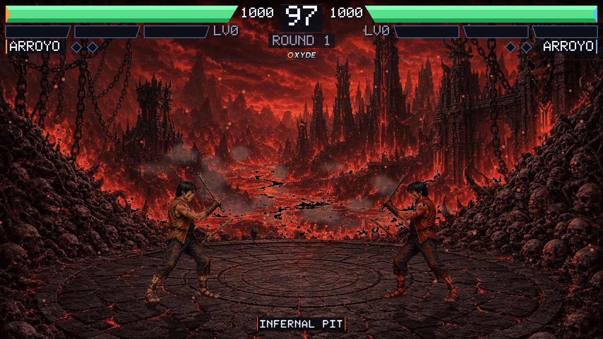
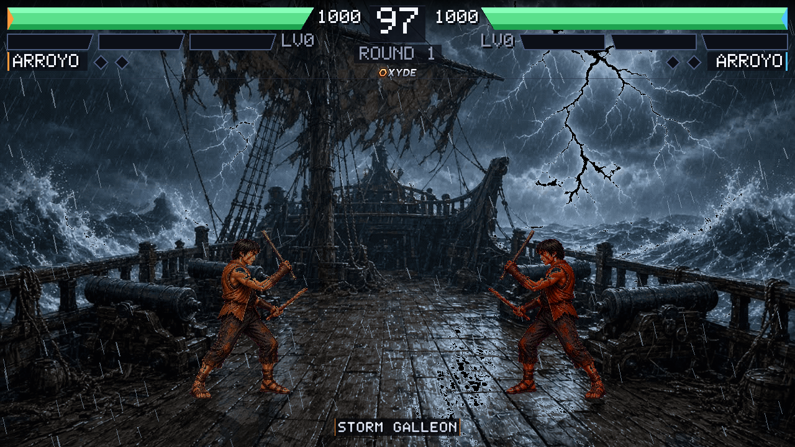
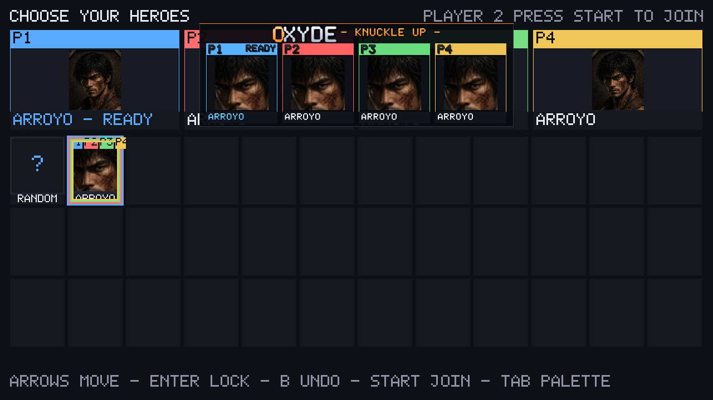
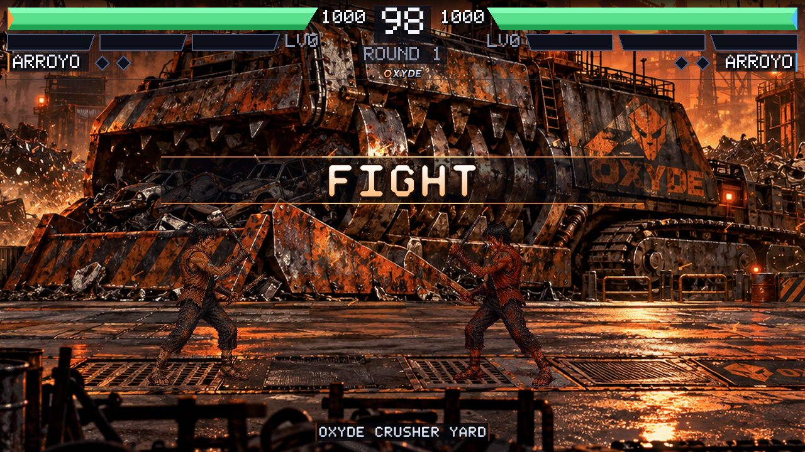
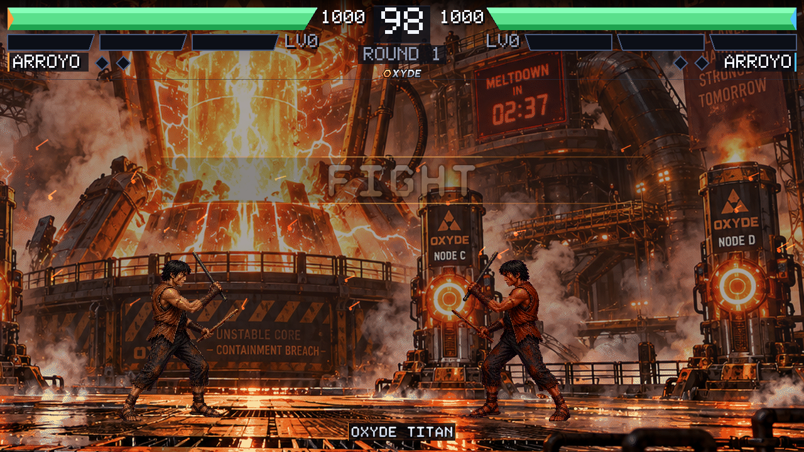
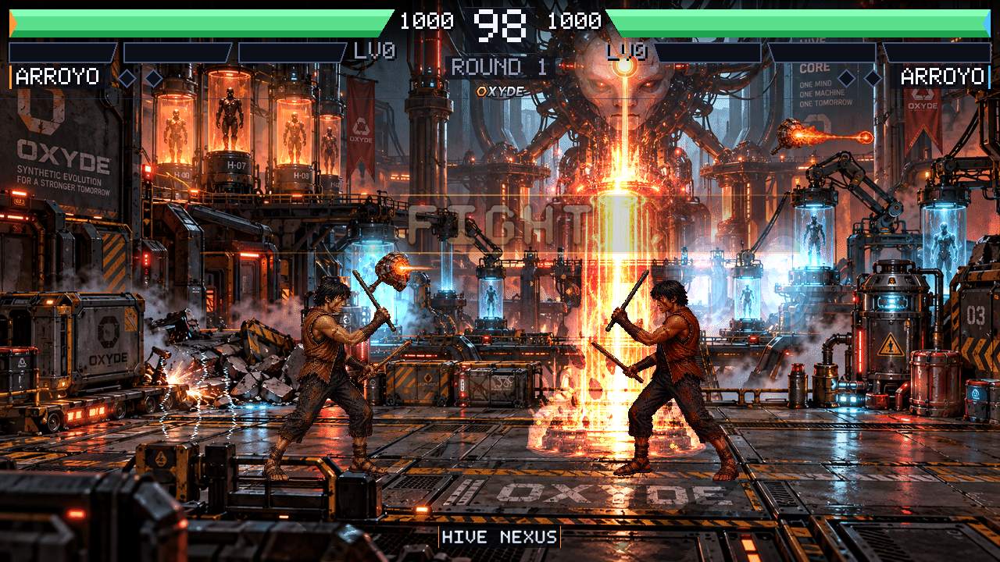